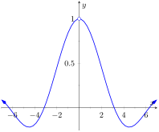
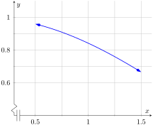
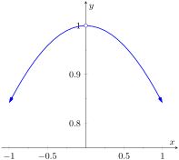
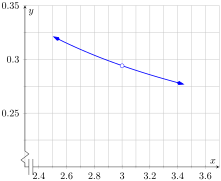
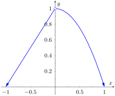
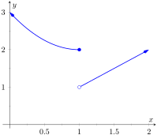
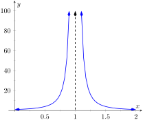
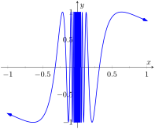
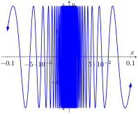
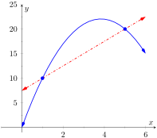

We begin our study of limits by considering examples that demonstrate key concepts that will be explained as we progress.
Consider the function \(y = \frac{\sin(x) }{x}\text{.}\) When \(x\) is near the value 1, what value (if any) is \(y\) near?
While our question is not precisely formed (what constitutes “near the value 1”?), the answer does not seem difficult to find. One might think first to look at a graph of this function to approximate the appropriate \(y\) values. Consider Figure 1.1.2, where \(y = \frac{\sin(x) }{x}\) is graphed. For values of \(x\) near 1, it seems that \(y\) takes on values near \(0.85\text{.}\) In fact, when \(x=1\text{,}\) then \(y=\frac{\sin(1) }{1} \approx 0.84\text{,}\) so it makes sense that when \(x\) is “near” 1, \(y\) will be “near” \(0.84\text{.}\)
Figure1.1.1.\(\sin(x)/x\)
Figure1.1.2.\(\sin(x)/x\) near \(x=1\)
Consider this same function again at a different value for \(x\text{.}\) When \(x\) is near \(0\text{,}\) what value (if any) is \(y\) near? By considering Figure 1.1.3, one can see that it seems that \(y\) takes on values near \(1\text{.}\) But what happens when \(x=0\text{?}\) We have
\begin{equation*}
y \rightarrow \frac{\sin(0) }{0} \rightarrow {\genfrac{}{}{0pt}{0}{\text{“}}{}}\frac{0}{0}{\genfrac{}{}{0pt}{0}{\text{”}}{}}\text{.}
\end{equation*}
The expression \(0/0\) has no value; it is indeterminate. Such an expression gives no information about what is going on with the function nearby. We cannot find out how \(y\) behaves near \(x=0\) for this function simply by letting \(x=0\text{.}\)

Figure1.1.3.\(\sin(x)/x\) near \(x=0\)
Finding a limit entails understanding how a function behaves near a particular value of \(x\text{.}\) Before continuing, it will be useful to establish some notation. Let \(y=f(x)\text{;}\) that is, let \(y\) be a function of \(x\) for some function \(f\text{.}\) The expression “the limit of \(y\) as \(x\) approaches \(1\)” describes a number, often referred to as \(L\text{,}\) that \(y\) nears as \(x\) nears \(1\text{.}\) We write all this as
(We approximated these limits, hence used the “\(\approx\)” symbol, since we are working with the pseudo-definition of a limit, not the actual definition.)
Once we have the true definition of a limit, we will find limits analytically; that is, exactly using a variety of mathematical tools. For now, we will approximate limits both graphically and numerically. Graphing a function can provide a good approximation, though often not very precise. Numerical methods can provide a more accurate approximation. We have already approximated limits graphically, so we now turn our attention to numerical approximations.
Consider again \(\lim_{x\to 1}\frac{\sin(x)}{x}\text{.}\) To approximate this limit numerically, we can create a table of \(x\) and \(f(x)\) values where \(x\) is “near” \(1\text{.}\) This is done in Figure 1.1.4.
Notice that for values of \(x\) near \(1\text{,}\) we have \(\sin(x)/x\) near \(0.841\text{.}\) The \(x=1\) row is included, but we stress the fact that when considering limits, we are not concerned with the value of the function at that particular \(x\) value; we are only concerned with the values of the function when \(x\) is near 1.
Table1.1.4.Values of \(\sin(x)/x\) with \(x\) near \(1\)
\(x\)
\(\sin(x)/x\)
0.9
0.870363
0.99
0.844471
0.999
0.841772
1
0.841471
1.001
0.841170
1.01
0.838447
1.1
0.810189
Now approximate \(\lim_{x\to 0} \frac{\sin(x)}{x}\) numerically. We already approximated the value of this limit as \(1\) graphically in Figure 1.1.3. Figure 1.1.5 shows the value of \(\sin(x)/x\) for values of \(x\) near \(0\text{.}\) Ten places after the decimal point are shown to highlight how close to \(1\) the value of \(\sin(x)/x\) gets as \(x\) takes on values very near \(0\text{.}\) We include the \(x=0\) row but again stress that we are not concerned with the value of our function at \(x=0\text{,}\) only on the behavior of the function near\(0\text{.}\)
Table1.1.5.Values of \(\sin(x)/x\) with \(x\) near \(0\)
\(x\)
\(\sin(x)/x\)
-0.1
0.9983341665
-0.01
0.9999833334
-0.001
0.9999998333
0
not defined
0.001
0.9999998333
0.01
0.9999833334
0.1
0.9983341665
This numerical method gives confidence to say that \(1\) is a good approximation of \(\lim_{x\to 0} \frac{\sin(x)}{x}\text{;}\) that is,
\begin{equation*}
y = \frac{x^2-x-6}{6x^2-19x+3}
\end{equation*}
on a small interval that contains \(3\text{.}\) To numerically approximate the limit, create a table of values where the \(x\) values are near \(3\text{.}\) This is done in Figure 1.1.7 and Figure 1.1.8, respectively.
Figure1.1.7.Graphically approximating a limit in Example 1.1.6
Table1.1.8.Numerically approximating a limit in Example 1.1.6
\(x\)
\(\frac{x^2-x-6}{6x^2-19x+3}\)
\(2.9\)
\(0.29878\)
\(2.99\)
\(0.294569\)
\(2.999\)
\(0.294163\)
3
not defined
\(3.001\)
\(0.294073\)
\(3.01\)
\(0.293669\)
\(3.1\)
\(0.289773\)
The graph shows that when \(x\) is near \(3\text{,}\) the value of \(y\) is very near \(0.3\text{.}\) By considering values of \(x\) near \(3\text{,}\) we see that \(y=0.294\) is a better approximation. The graph and the table imply that
This example may bring up a few questions about approximating limits (and the nature of limits themselves).
If a graph does not produce as good an approximation as a table, why bother with it?
How many values of \(x\) in a table are “enough?” In the previous example, could we have just used \(x=3.001\) and found a fine approximation?
Graphs are useful since they give a visual understanding concerning the behavior of a function. Sometimes a function may act “erratically” near certain \(x\) values which is hard to discern numerically but very plain graphically (see Example 1.1.18). Since graphing utilities are very accessible, it makes sense to make proper use of them.
Since tables and graphs are used only to approximate the value of a limit, there is not a firm answer to how many data points are “enough.” Include enough so that a trend is clear, and use values (when possible) both less than and greater than the value in question. In Example 1.1.6, we used both values less than and greater than \(3\text{.}\) Had we used just \(x=3.001\text{,}\) we might have been tempted to conclude that the limit had a value of \(0.3\text{.}\) While this is not far off, we could do better. Using values “on both sides of 3” helps us identify trends.
Example1.1.9.Approximating the value of a limit.
Graphically and numerically approximate the limit of \(f(x)\) as \(x\) approaches \(0\text{,}\) where
Again we graph \(f(x)\) and create a table of its values near \(x=0\) to approximate the limit. Note that this is a piecewise defined function, so it behaves differently on either side of \(0\text{.}\)Figure 1.1.10 shows a graph of \(f(x)\text{,}\) and on either side of \(0\) it seems the \(y\) values approach \(1\text{.}\) Note that \(f(0)\) is not actually defined, as indicated in the graph with the open circle.
Figure1.1.10.Graphically approximating a limit in Example 1.1.9
Table1.1.11.Numerically approximating a limit in Example 1.1.9
\(x\)
\(f(x)\)
\(-0.1\)
\(0.9\)
\(-0.01\)
\(0.99\)
\(-0.001\)
\(0.999\)
\(0.001\)
\(0.999999\)
\(0.01\)
\(0.9999\)
\(0.1\)
\(0.99\)
Figure 1.1.11 shows values of \(f(x)\) for values of \(x\) near \(0\text{.}\) It is clear that as \(x\) takes on values very near \(0\text{,}\)\(f(x)\) takes on values very near \(1\text{.}\) It turns out that if we let \(x=0\) for either “piece” of \(f(x)\text{,}\)\(1\) is returned; this is significant and we'll return to this idea later.
The graph and table allow us to say that \(\lim_{x\to 0}f(x) \approx 1\text{;}\) in fact, we are probably very sure it equals 1.
Subsection1.1.1Identifying When Limits Do Not Exist
A function may not have a limit for all values of \(x\text{.}\) That is, we cannot write that \(\lim_{x\to c}f(x)=L\) (where \(L\) is some real number) for all values of \(c\text{,}\) for there may not be a number that \(f(x)\) is approaching. There are three common ways in which a limit may fail to exist.
The function \(f(x)\) may approach different values on either side of \(c\text{.}\)
The function may grow without upper or lower bound as \(x\) approaches \(c\text{.}\)
The function may oscillate as \(x\) approaches \(c\) without approaching a specific value.
We'll explore each of these in turn.
Example1.1.12.Different Values Approached From Left and Right.
Explore why \(\lim_{x\to 1} f(x)\) does not exist, where
\begin{equation*}
f(x) = \begin{cases}x^2-2x+3 \amp x\leq 1 \\ x \amp x \gt 1\end{cases}\text{.}
\end{equation*}
A graph of \(f(x)\) around \(x=1\) and a table are given in Figures Figure 1.1.13 and Table 1.1.14, respectively. It is clear that as \(x\) approaches \(1\text{,}\)\(f(x)\) does not seem to approach a single number. Instead, it seems as though \(f(x)\) approaches two different numbers. When considering values of \(x\) less than \(1\) (approaching \(1\) from the left), it seems that \(f(x)\) is approaching \(2\text{;}\) when considering values of \(x\) greater than \(1\) (approaching \(1\) from the right), it seems that \(f(x)\) is approaching \(1\text{.}\) Recognizing this behavior is important; we'll study this in greater depth later. Right now, it suffices to say that the limit does not exist since \(f(x)\) is approaching two different values as \(x\) approaches \(1\text{.}\)
Figure1.1.13.Observing no limit as \(x\to 1\) in Example 1.1.12
Table1.1.14.Values of \(f(x)\) near \(x=1\) in Example 1.1.12
\(x\)
\(f(x)\)
\(0.9\)
\(2.01\)
\(0.99\)
\(2.0001\)
\(0.999\)
\(2.000001\)
\(1.001\)
\(1.001\)
\(1.01\)
\(1.01\)
\(1.1\)
\(1.1\)
Example1.1.15.The Function Grows Without Bound.
Explore why \(\lim_{x\to 1} \frac{1}{(x-1)^2}\) does not exist.
A graph and table of \(f(x) = \frac{1}{(x-1)^2}\) are given in Figure 1.1.16 and Figure 1.1.17, respectively. Both show that as \(x\) approaches \(1\text{,}\)\(f(x)\) grows larger and larger.
Figure1.1.16.Observing no limit as \(x\to 1\) in Example 1.1.15
Table1.1.17.Values of \(f(x)\) near \(x=1\) in Example 1.1.15
\(x\)
\(f(x)\)
\(0.9\)
\(100\text{.}\)
\(0.99\)
\(10000\text{.}\)
\(0.999\)
\(1.\times 10^6\)
\(1.001\)
\(1.\times 10^6\)
\(1.01\)
\(10000\text{.}\)
\(1.1\)
\(100\text{.}\)
We can deduce this on our own, without the aid of the graph and table. If \(x\) is near 1, then \((x-1)^2\) is very small, and:
\begin{equation*}
\frac{1}{\text{ very small number } } = \text{ very large number }\text{.}
\end{equation*}
Since \(f(x)\) is not approaching a single number, we conclude that
Two graphs of \(f(x) = \sin(1/x)\) are given in Figure 1.1.19. Figure 1.1.19.(a) shows \(f(x)\) on the interval \([-1,1]\text{;}\) notice how \(f(x)\) seems to oscillate near \(x=0\text{.}\) One might think that despite the oscillation, as \(x\) approaches \(0\text{,}\)\(f(x)\) approaches \(0\text{.}\) However, Figure 1.1.19.(b) zooms in on \(\sin(1/x)\text{,}\) on the interval \([-0.1,0.1]\text{.}\) Here the oscillation is even more pronounced. Finally, in Figure 1.1.20, we see \(\sin(1/x)\) evaluated for values of \(x\) near \(0\text{.}\) As \(x\) approaches \(0\text{,}\)\(f(x)\) does not appear to approach any value.
(a)
(b)
Figure1.1.19.Observing that \(f(x)=\sin(1/x)\) has no limit as \(x\to0\) in Example 1.1.18
Table1.1.20.Observing that \(f(x)=\sin(1/x)\) has no limit as \(x\to0\) in Example 1.1.18
\(x\)
\(\sin(1/x)\)
\(0.1\)
\(-0.544021\)
\(0.01\)
\(-0.506366\)
\(0.001\)
\(0.82688\)
\(0.0001\)
\(-0.305614\)
\(1.\times 10^{-5}\)
\(0.0357488\)
\(1.\times 10^{-6}\)
\(-0.349994\)
\(1.\times 10^{-7}\)
\(0.420548\)
It can be shown that in reality, as \(x\) approaches 0, \(\sin(1/x)\) takes on all values between \(-1\) and \(1\) infinitely many times! Because of this oscillation, \(\lim_{x\to 0}\sin(1/x)\) does not exist.
Subsection1.1.2Limits of Difference Quotients
We have approximated limits of functions as \(x\) approached a particular number. We will consider another important kind of limit after explaining a few key ideas.
Let \(f(x)\) represent the position function, in feet, of some particle that is moving in a straight line, where \(x\) is measured in seconds. Let's say that when \(x=1\text{,}\) the particle is at position \(10\) ft., and when \(x=5\text{,}\) the particle is at \(20\) ft. Another way of expressing this is to say
\(f(1)=10\) and \(f(5) = 20\text{.}\)
Since the particle traveled \(10\) feet in \(4\) seconds, we can say the particle's average velocity was \(2.5\) ft/s. We write this calculation using a “quotient of differences,” or, a difference quotient:
This difference quotient can be thought of as the familiar “rise over run” used to compute the slopes of lines. In fact, that is essentially what we are doing: given two points on the graph of \(f\text{,}\) we are finding the slope of the secant line through those two points. See Figure 1.1.21.

Figure1.1.21.Interpreting a difference quotient as the slope of a secant line
Now consider finding the average speed on another time interval. We again start at \(x=1\text{,}\) but consider the position of the particle \(h\) seconds later. That is, consider the positions of the particle when \(x=1\) and when \(x=1+h\text{.}\) The difference quotient (excluding units) is now
Let \(f(x) = -1.5x^2+11.5x\text{;}\) note that \(f(1)=10\) and \(f(5) = 20\text{,}\) as in our discussion. We can compute this difference quotient for all values of \(h\) (even negative values!) except \(h=0\text{,}\) for then we get “0/0,” the indeterminate form introduced earlier. For all values \(h\neq 0\text{,}\) the difference quotient computes the average velocity of the particle over an interval of time of length \(h\) starting at \(x=1\text{.}\)
For small values of \(h\text{,}\) i.e., values of \(h\) close to \(0\text{,}\) we get average velocities over very short time periods and compute secant lines over small intervals. See Figure 1.1.22. This leads us to wonder what the limit of the difference quotient is as \(h\) approaches \(0\text{.}\) That is,
Figure1.1.22.Secant lines of \(f(x)\) at \(x=1\) and \(x=1+h\text{,}\) for shrinking values of \(h\) (i.e., \(h\rightarrow 0\))
As we do not yet have a true definition of a limit nor an exact method for computing it, we settle for approximating the value. While we could graph the difference quotient (where the \(x\)-axis would represent \(h\) values and the \(y\)-axis would represent values of the difference quotient) we settle for making a table. See Table 1.1.23. The table gives us reason to assume the value of the limit is about \(8.5\text{.}\)
Table1.1.23.The difference quotient evaluated at values of \(h\) near \(0\)
\(h\)
\(\frac{f(1+h)-f(1)}{h}\)
\(-0.5\)
\(9.25\)
\(-0.1\)
\(8.65\)
\(-0.01\)
\(8.515\)
\(0.01\)
\(8.485\)
\(0.1\)
\(8.35\)
\(0.5\)
\(7.75\)
Proper understanding of limits is key to understanding calculus. With limits, we can accomplish seemingly impossible mathematical things, like adding up an infinite number of numbers (and not get infinity) and finding the slope of a line between two points, where the “two points” are actually the same point. These are not just mathematical curiosities; they allow us to link position, velocity and acceleration together, connect cross-sectional areas to volume, find the work done by a variable force, and much more.
In the next section we give the formal definition of the limit and begin our study of finding limits analytically. In the following exercises, we continue our introduction and approximate the value of limits.
Exercises1.1.3Exercises
Terms and Concepts
1.
In your own words, what does it mean to “find the limit of \(f(x)\) as \(x\) approaches 3”?
2.
An expression of the form \(\frac{0}{0}\) is called .
3.
True
False
The limit of \(f(x)\) as \(x\) approaches \(5\) is \(f(5)\text{.}\)
4.
Describe three situations where \(\lim\limits_{x\to c}f(x)\) does not exist.
5.
In your own words, what is a difference quotient?
6.
When \(x\) is near \(0\text{,}\)\(\dfrac{\sin x}{x}\) is near what value?
Problems
Exercise Group.
Approximate the limit numerically and graphically.
\(\lim\limits_{x\to -1}f(x)\text{,}\) where \(f(x)={\begin{cases}\displaystyle{x+1}\amp \text{if}\ x \le -1\cr
\displaystyle{-\left(3x+4\right)}\amp \text{if}\ x > -1\end{cases}}\)
14.
\(\lim\limits_{x\to -2}f(x)\text{,}\) where \(f(x)={\begin{cases}\displaystyle{x^{2}-2x-2}\amp \text{if}\ x \le -2\cr
\displaystyle{2x+10}\amp \text{if}\ x > -2\end{cases}}\)
15.
\(\lim\limits_{x\to 0}f(x)\text{,}\) where \(f(x)={\begin{cases}\displaystyle{\cos\!\left(x\right)}\amp \text{if}\ x \le 0\cr
\displaystyle{x^{2}+2x+1}\amp \text{if}\ x > 0\end{cases}}\)
\(\lim\limits_{x\to-5}\big\lfloor\lvert x\rvert\big\rfloor !\text{,}\) where \(\lvert x\rvert\) is the absolute value of \(x\text{,}\)\(\lfloor x\rfloor\) is the floor of \(x\) (the greatest integer less than or equal to \(x\)), and \(x!\) is \(x\) factorial.
20.
\(\lim\limits_{x\to-1}\big\lfloor\lvert x\rvert\big\rfloor !\text{,}\) where \(\lvert x\rvert\) is the absolute value of \(x\text{,}\)\(\lfloor x\rfloor\) is the floor of \(x\) (the greatest integer less than or equal to \(x\)), and \(x!\) is \(x\) factorial.
Exercise Group.
Approximate the limit of the difference quotient, \(\lim\limits_{h\to 0}\frac{f(a+h)-f(a)}{h}\text{,}\) using \(h = \pm 0.1, \pm 0.01\text{.}\)